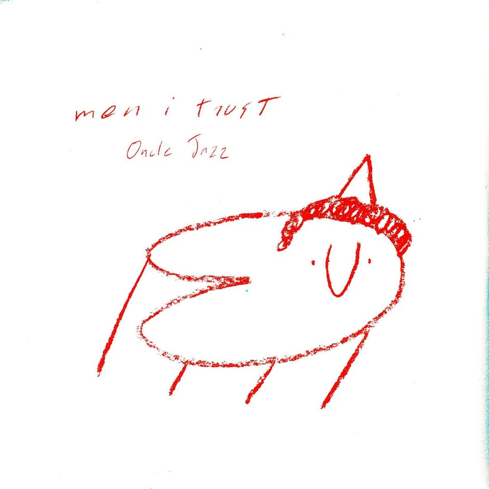
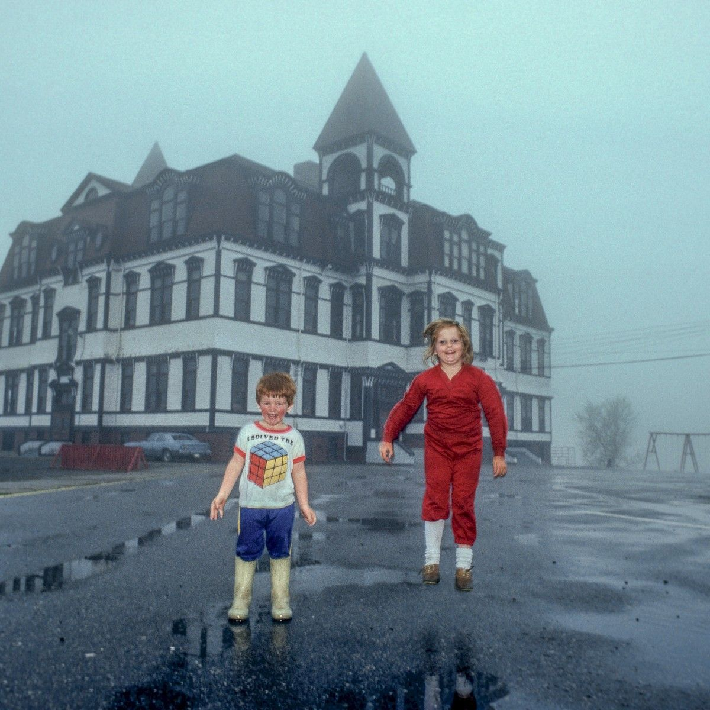
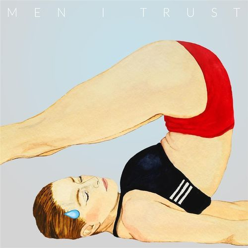
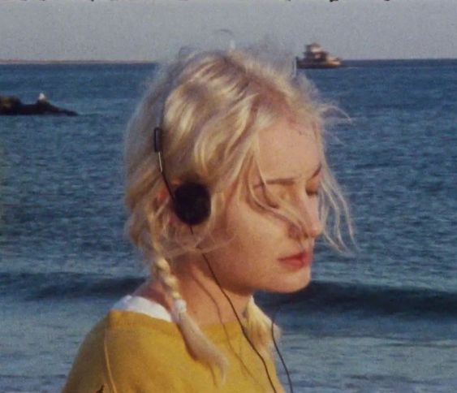
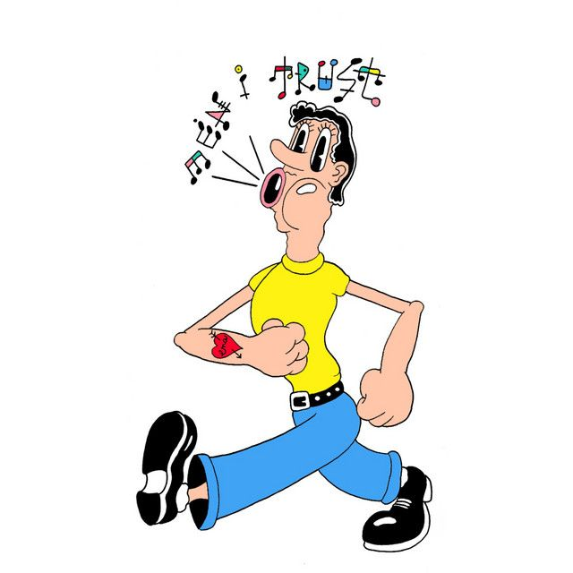
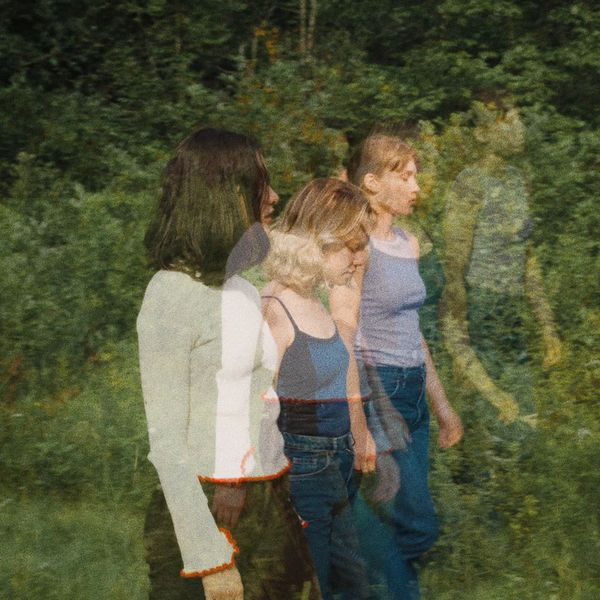
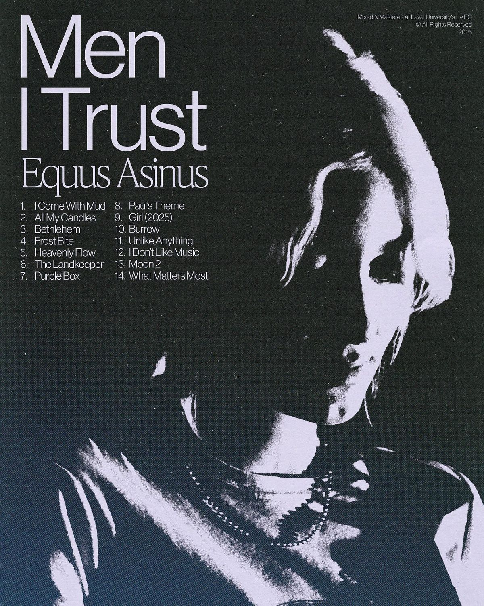

Oncle Jazz
Uno de los álbumes más conocidos de la banda, con un sonido suave, melódico y muy representativo de su estilo.
Álbumes y canciones destacadas

Uno de los álbumes más conocidos de la banda, con un sonido suave, melódico y muy representativo de su estilo.

Proyecto musical con una atmósfera más íntima y relajada, manteniendo la esencia característica de Men I Trust.

Álbum que forma parte de los primeros trabajos de la banda y muestra su crecimiento musical.
Estas son algunas canciones destacadas de Men I Trust. Cada tarjeta incluye una imagen representativa y un enlace para escuchar la canción en YouTube.
Show Me How habla sobre el deseo de conectar con alguien que se siente lejano. La canción expresa nostalgia, amor y la necesidad de aprender a cuidar, sentir y acercarse emocionalmente a otra persona.
Escuchar en YouTube
Numb habla sobre tristeza, arrepentimiento y desconexión emocional. La canción expresa el dolor de una persona que reconoce haber lastimado a alguien y se siente atrapada en sus propios sentimientos.
Escuchar en YouTubeI Hope to Be Around habla sobre el deseo de crecer, encontrarse y vivir de forma auténtica. La canción reflexiona sobre el paso del tiempo, la rutina y la esperanza de seguir cambiando sin perder la esencia personal.
Escuchar en YouTube
Tailwhip habla sobre la nostalgia, la tranquilidad y el deseo de volver a un lugar familiar. La canción transmite la idea de encontrar paz en lo simple, lejos del ruido y las complicaciones de la vida moderna.
Escuchar en YouTubeLauren habla sobre la necesidad de cambiar, crecer y salir de lo conocido. La canción transmite libertadad e introspección, mostrando que a veces es necesario alejarse para valorar el hogar y vivir nuevas experiencias.
Escuchar en YouTube
Seven habla sobre la curiosidad y el deseo. La canción transmite una atmósfera melancólica donde una persona observa una experiencia ajena y siente ganas de comprender emociones más profundas.
Escuchar en YouTubeEn esta seccion puedes visualizar varias posters de la banda.
